Лодочники
( Соболиное озеро)
- 8-12 июля 2008 -
Из серии "Мемуары. Лето-2008"
На Соболиное озеро мы ходим практически каждое лето и как
только не ходим. И по левому берегу Селенгинки, и по правому. И вброд
через нее, и вплавь. Этим летом решили идти по другому берегу Снежной
- по западному, по Иркутскому. Потому как уже давно хотели, но лодки не
было. А тут появилась. А лодка вещь в хозяйстве зело нужная и полезная
:)
8 июля.
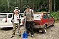
На этом фото вы видете двух замечательных людей - Оксану и Александра.
Оксана - активная и восторженная почитательница красоты Соболиного
озера, ее ноги помнят каждый камень, лежащий на тропе к озеру, а ее источник
адреналина - переправа через Селенгинку :)
Александр - лодкообладатель, и этим все сказано :) тайно презирает
туристов с их палатками, спальниками и анатомическими рюкзаками, ну да
куда он от нас денется, мы его отучим у костра спать :)))
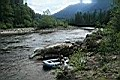
. 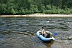
. 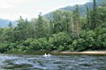
. 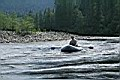
. 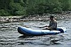
До турбазы Теплые Озера доехали на машине, там же машину и оставили на
стоянке. Дальше пошли пешком по дороге за турбазу, а потом и по тропе.
По старой доброй традиции я завел своих товарищей в дремучую тайгу, где
тропа внезапно кончилась. Да, мы легких путей не ищем, у нас есть карта
и солнце с нами, так что мы сорентировались на местности и вышли туда,
куда нам надо было. Т.е. на стрелку Снежной и Селенгинки. Перекусили,
отдохнули, поднялись вверх по течению и нашли отличное место для переправы.
Снежная здесь глубокая и спокойная. Саша надувает лодку и перевозит Оксану
на другой берег. Ура, свершилось!!! Затем настала моя очередь "сушить
бивни" :) Вот такое маленькое приключение с новой лодкой.
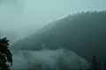
. 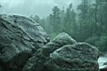
. 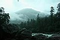
В общем, благополучно форсировали Снежную, сдули замечательную лодочку,
бережно упаковали в рюкзак и пошли к Соболиному озеру по старой и известной
тропе. По дороге попали в грозу, хотя и переждали ливневые потоки под
камнем и под тентом, но все равно на подходе к озеру были мокрые. На озере
надули лодку и попытались втроем проплыть по озеру к Тополевому мысу.
Но не смогли, течение в проливе было очень сильное. Пришлось переходить
по полуострову. Дальше поплыли нормально, но уже в сумерках и под дождем,
поэтому плыли "медленно и печально" :)
На Тополевом мысе, на нашей любимой поляне уже стояла палатка, но выбирать
в темноте не приходилось, поэтому поставили палатку, переоделись в сухое,
сварили ужин на горелке, поели, выпили для сугреву и легли спать. (В качестве
эксперимента я не брал в этот поход спальник, поэтому немного замерз).
9 июля.
Утром сплавали с Сашей на другой берег в надежде найти там хорошую поляну,
но берег там очень наклонный. Решили плыть втроем на пляж. А на пляже
есть где развернуться, хоть и ветер дует. Поставили палатку, обгородились
тентами, развели костер и стало хорошо :) А чтобы стало как в сказке,
решили сплавать и сходить на Сказку :) Это такой водопад на Красном ручье.
Заплыли в протоку, вышли на тропу, посетили зимовье патриарха Бороды,
ну и под моросящим дождиком полюбовались на Сказку. Вечером сидели под
тентом, вокруг дождь и ветер, а у нас костер и музыка :) Да, еще по темноте
ставили сеть, Саша рыбак же, надо же рыбу поймать..
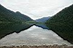
. 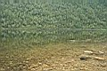
. 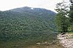
. 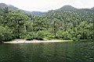
. 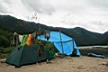
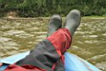
. 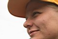
. 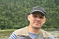
. 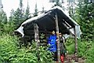
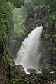
. 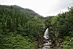
. 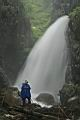
. 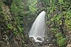
. 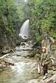
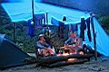
. 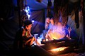
10 июля.
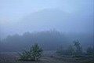 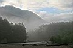 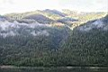 
Утро туманное, утро сырое, но день обещал быть отличным! Утром сняли
сеть, всю порванную и без рыбы. Потом Саша отвез меня к началу озера и
я пошел в Выдрино - нужно было встретить одного хорошего человека и сводить
его на Соболиное. Пошел я налегке, через новый мост и по восточному бурятскому
берегу. На одном песчанном пляже на Снежной устроил себе перекус с купанием
и загоранием.
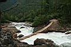
!!! 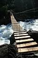
!!! 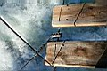
" Мост!!! Усохни моя душенька, МОСТ !!! "
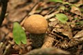
^ 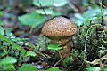
^ 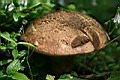
На первом фото обычный белый гриб, а на последний двух маховики,
это очень распространенные в этой местности грибы, но
в других районах о них не знают. Очень съедобные.
11 июля.
Я в Ново-Снежной, в гостях у родителей. Один хороший человек
на Соболиное не пошел, потому что приболел, так что после обеда я двинул
в одного обратно, в дорогу дальнюю
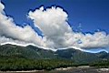
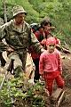
/ 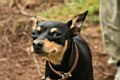
/ 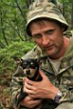
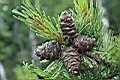 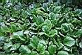 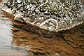 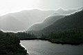
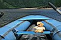 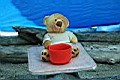 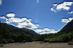
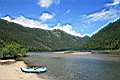 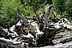 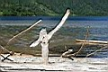 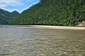
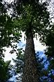
Лёха Слюдянский (июль 2008)
|